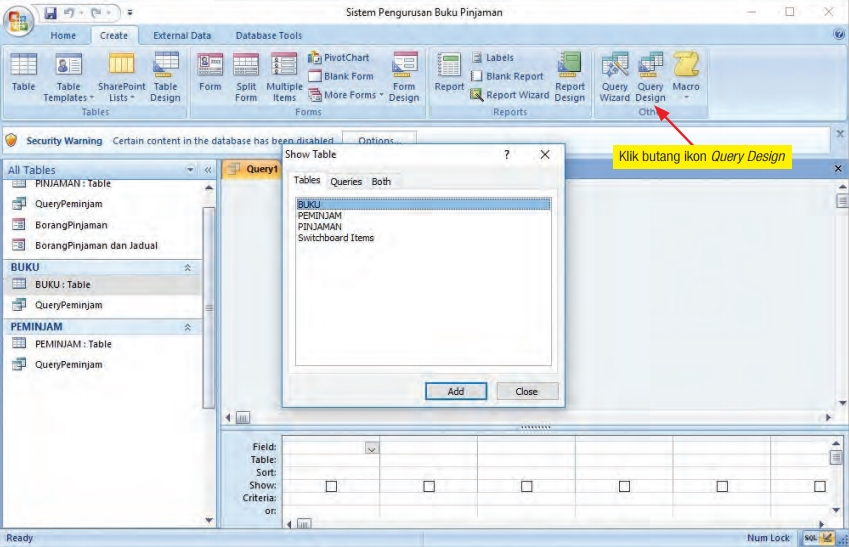
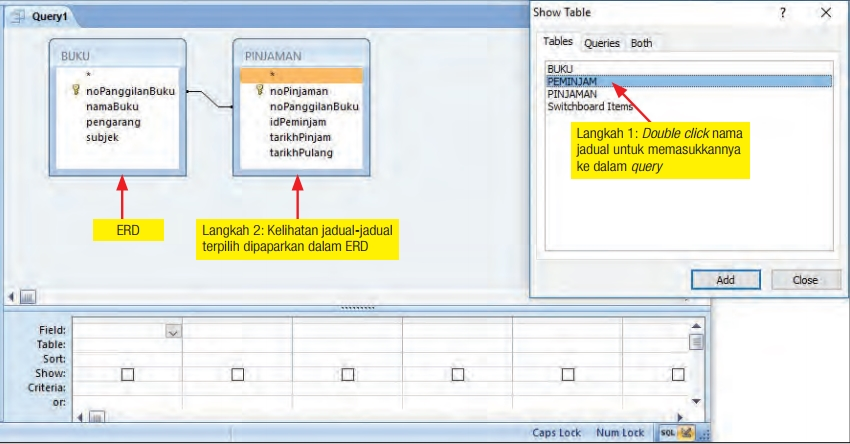
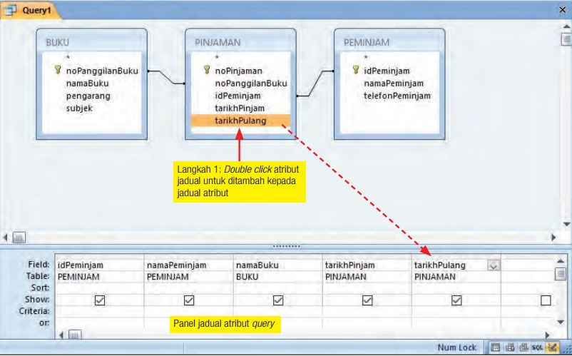
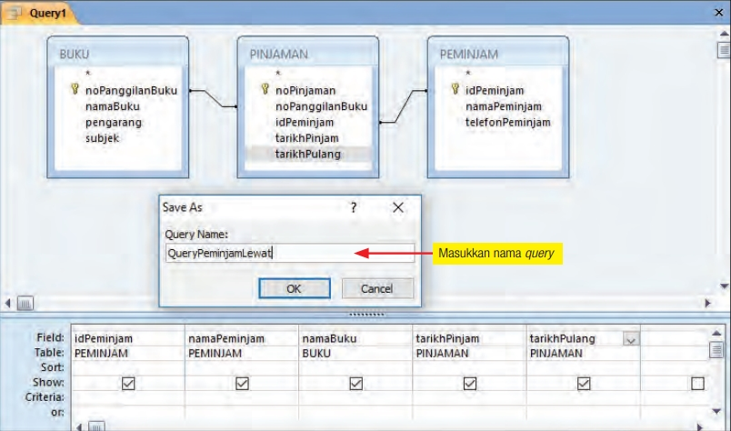
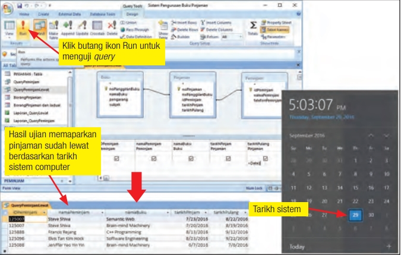
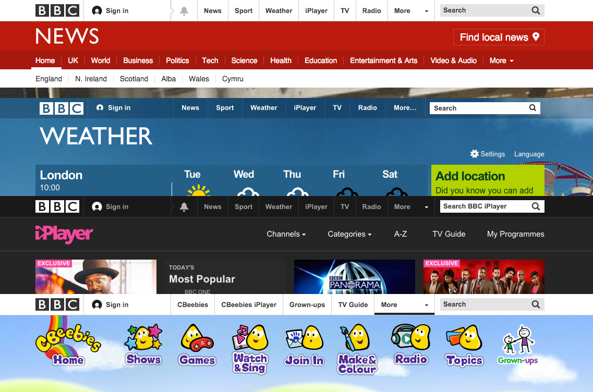
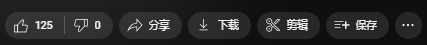
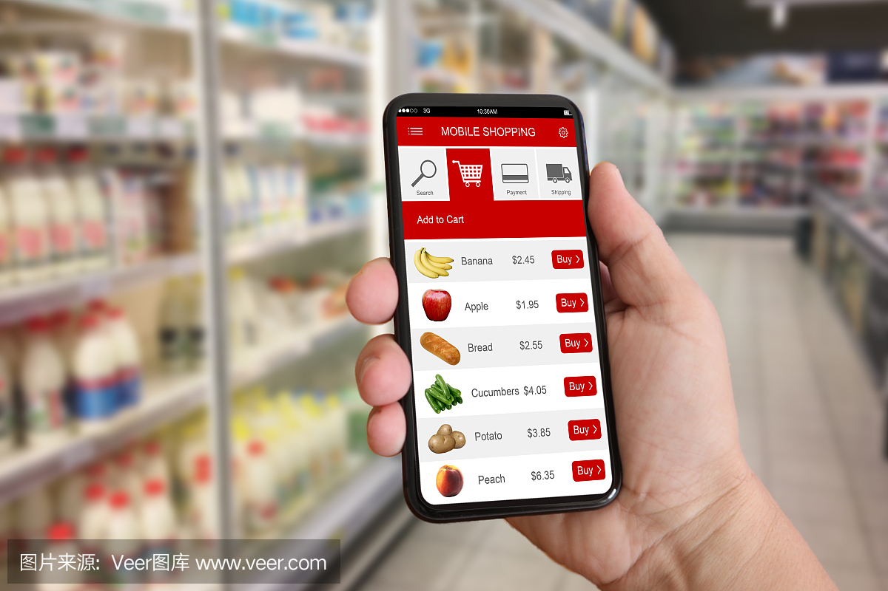
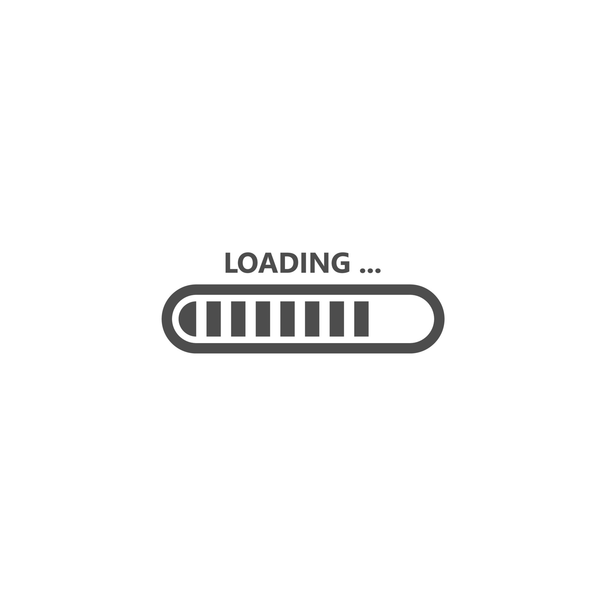

Kandungan ini mempunyai hak cipta kepada KPM (Buku Teks) dan Pencipta grafik,
Pengaturcaraan dan Nota dikecualikan.
(C) 2024 Sains Komputer
Menu (ONLY HAVE BAB 2 & 3)
简单的这里没教哦，像ERD, Pernomalan之类
点击你要看的笔记可快速跳转（手机太下的内容可能跳转不了）
Query - Microsoft Access
查询（Query）是 Microsoft Access 中用于从数据库中检索、筛选和操作数据的一种工具。
Kegunaan Query
Query (Pernyataan) membuat carian dalam pangkalan data dengan menggunakan kriteria tertentu
Query使用特定条件在数据库中进行搜索筛选
举个例子，筛选出所有出身年份为2007年的学生
Setup （可忽略这些图，可能不重要）
   Membuat query （重点）
Tambah Kriteria 增加筛选条件
筛选表（读不读随你，但建议你看数值条件）
数值条件：用于筛选数值字段。
- 等于（=）：例如，= 100
- 大于（>）：例如，> 100
- 小于（<）：例如，< 100
- 大于等于（>=）：例如，>= 100
- 小于等于（<=）：例如，<= 100
- 不等于（<>）：例如，<> 100
文本条件：用于筛选文本字段。
- 精确匹配：例如，"Smith"
- 模糊匹配：使用 LIKE 和通配符，例如，LIKE "S*"
- 不等于：例如，<> "Smith"
日期条件：用于筛选日期字段。
- 等于：例如，#2024-01-01#
- 在某个日期之前：例如，< #2024-01-01#
- 在某个日期之后：例如，> #2024-01-01#
- 在一段日期范围内：例如，BETWEEN #2024-01-01# AND #2024-12-31#
逻辑条件：使用布尔逻辑运算符。
- AND：所有条件都必须满足，例如，Age > 30 AND City = "New York"
- OR：任意一个条件满足即可，例如，Age < 20 OR Age > 60
- NOT：否定条件，例如，NOT City = "New York"
空值条件：检查字段是否为空或非空。
- IS NULL：例如，City IS NULL
- IS NOT NULL：例如，City IS NOT NULL
计算和表达式条件：使用计算和表达式。
- 计算结果匹配：例如，[Quantity] * [UnitPrice] > 1000
- 字段组合条件：例如，[FirstName] & " " & [LastName] = "John Smith"
Reka Bentuk Interaksi
Konsistensi
一致性（Konsistensi）: 任何界面上的变化都可能引起用户的注意或干扰用户的使用体验。
为了让用户在使用应用程序时感到舒适，所有元素应保持在相同的位置。如果这些元素在没有合理的原因和目的下被移动，会打断用户的注意力。
Semua elemen perlu kekal
pada kedudukan yang sama supaya pengguna akan berasa selesa semasa menggunakan
aplikasi.
Jika elemen-elemen tersebut dialihkan tanpa sebab dan tujuan, fokus pengguna
akan terganggu.
Kebolehan membuat pemerhatian
新用户在第一次使用应用程序时会仔细观察界面的所有方面。交互指示器或按钮应易于识别。
如果交互指示器或按钮难以发现，用户会感到不适。
最佳的用户体验是用户能够舒适地、毫不犹豫地使用应用程序。

Penunjuk atau butang
interaksi perlulah mudah dikenal pasti.
Jika penunjuk/butang interaksi sukar dikesan, pengguna
akan berasa tidak selesa.
Boleh dipelajari
一般来说，交互设计应该易于学习和记忆。
用户通常只需使用一次界面，就可以学习并记住如何操作该界面。
例如，WhatsApp 应用程序，用户只需使用一次，就能学会如何操作，并能长期记住使用方法。
Logiknya, pengguna hanya menggunakan antara muka tersebut sekali, tetapi pada masa yang sama, mereka mempelajarinya dan mengingati apa-apa yang dipelajari untuk selama-lamanya.
Kebolehan untuk menjangka
用户在使用应用程序之前，就能预测应用程序的流程和结果。
通过直观的设计和一致的用户体验，用户可以在应用程序中做出合理的预期，从而减少学习时间，提高使用效率。
来个比方，网上购物时用户可以在添加商品到购物车后预期接下来的步骤

Reka bentuk interaksi yang baik dan berkesan dapat membuatkan pengguna membuat jangkaan perkara yang akan berlaku dalam aliran proses aplikasi tersebut sebelum pengguna menggunakan aplikasi tersebut.
Maklum balas
用户的反馈对于交互设计至关重要。它不仅提供了关于结果的真实图像，还帮助设计师改进已有的交互设计。
有效的反馈应具有意义，因为没有适当的反馈可能导致用户感到不安或困惑，使他们重复无用的步骤，进而影响他们的操作体验和应用的使用频率。

Pereka bentuk
menggunakan maklum balas untuk melakukan penambahbaikan pada reka bentuk interaksi
yang telah dihasilkan.
Kegagalan untuk memberikan maklum balas yang
dikehendaki, boleh menyebabkan proses pengulangan yang
tidak sepatutnya terhadap sebarang tindakan, kesalahan dan
ralat.
Proses Reka Bentuk Interaksi
1. Mengenal pasti Keperluan Interaksi
开发者需知道程式的使用者，留意现有产品，及其需求，可用一些方法确定。
Pereka bentuk perlu mengetahui pengguna yang
disasarkan untuk menggunakan produk yang akan dihasilkan dan
matlamat atau tujuan pengguna menggunakan produk tersebut.
Pereka
bentuk juga perlu membuat pemerhatian kepada produk sedia ada dan
mengkaji penyelesaian masalah yang sedia ada dalam produk yang
lain.
Antara kaedah yang sering digunakan ialah
- borang soal selidik
- temu ramah
- kajian tindakan
- maklum balas
- tinjauan dan pemerhatian kumpulan sasaran
- borang tinjauan secara atas talian
2. Membangunkan Reka Bentuk Alternatif
在这个阶段，设计师需要思考几种认为适合解决问题的替代方案。
这些方案的生成可以来自于观察其他产品的设计、类似的设计方案，以及设计师自身经验中的灵感和创意过程。设计过程可以分为两个子组件：
概念设计
- 创建产品的概念模型
- 描述产品的功能和特征
- 给出产品的整体图像
物理设计
- 详细说明产品的各个方面，包括颜色、音频、图像等细节
- 设计将使用的菜单和图标
- 考虑界面中的每个元素
Seterusnys, pereka bentuk perlu memikirkan
beberapa alternatif yang dirasakan sesuai digunakan untuk mengatasi
masalah yang dihadapi.
Penjanaan
Reka bentuk alternatif boleh datang daripada
- Pemerhatian ke atas reka bentuk produk yang lain
- Reka bentuk yang sama
- Proses inspirasi dan kreativiti hasil daripada pengalaman pereka sendiri
Fasa ini boleh dibahagikan kepada 2 sub komponen
Reka bentuk konsep:
- Penghasilan model konsep untuk produk
- Menerangkan apa yang boleh dilakukan oleh produk
- Ciri serta gambaran produk tersebut
Reka bentuk fizikal:
- Butir-butir terperinci mengenai produk termasuklah warna, audio, imej
- Reka bentuk menu dan ikon yang akan digunakan
- Setiap aspek yang ada dalam "antara muka" akan diambil kira